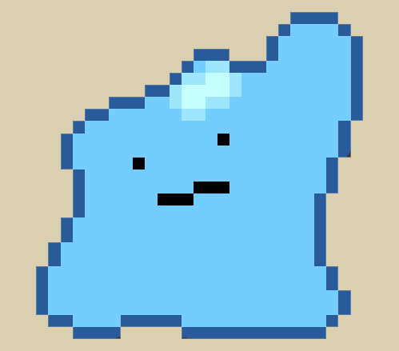

Cleaned up the site and added a new banner. Finally showing love to https (and Win95/98).
January 10, 2018
November 6, 2017
April 1, 2017
Update to Windows 98! Click
here!
March 17, 2017
Hosted a fork of GBA4iOS on my site. Download
here!
March 11, 2017
Lmao I told you boys this page was gonna go to shit instantly. Anyway, today we work on the Ultimate Windows 95/98/XP Machine triple boot extravaganza. Stay tuned for some more cancer and extra shit I'm gonna put on this site to make it more worth while for the headasses that actually need some vintage 1999-2003 computer trappin' boomin. Also fixed the underlining shit on the dates of all the posts. Finally doing some HTML that actually makes logical fuckin' sense, boys!!
February 25, 2017
LMAO this website has turned to shit in a matter of days. Finally got the 'site boolin' on the 68k Mac in Basilisk II. We need a real trappin' Mac. It would be lit af to pop an ethernet card into the Plus/SE or scheme the printer port to snake to the 'net. Good shit!! Well, I'm prolly gonna add some BS links to the site just to make it look like I actually did something today on here. Adios lil boi.
February 12, 2017
I'm still operating, boys. Don't worry. I need to somehow disable HTTPS on this dumb fuckin' site so that I can view it on Mac OS System 7. That'll be lit af!! Also, I added some little hidden clickable guys to the site. Find them if you want. Or not. This page is my HTML playground and if you wanna square up I'll clober ya.
February 4, 2017
New cursor trail or somethin. We trappin out now boy. This is pure 2002 vintage dialup. Also, I put the dates of the posts in order now. New posts first followed by older ones at the end. I love being awake at 1 am coding HTML :,)
February 3, 2017
Finally put this page onto the interwebz. Welcome aboard. Shouts out to GitHub for makin' this trap shit possible.
February 2, 2017
Second day editing more shit to this site. Minor updates but hey it's fuckin' something. Hoping to actually host this piece of shit somewhere on the webz, fam. See you on the other side just like the fuckin' Mexicans.
Also added the Windows 95 startup sound once you access the website. Originally it was the "welcome to your doom" sample. fuck. i love samples. also, i've realized spelling punctuation and other bullshit doesnt matter here anymore. fuck it. it only took me like 5 days total from the origins of this html document inside textwranger to get fuckin pissed off.
January 31, 2017
What's good, fam? Welcome to Palmsay's (Insecure) Digital Insanity! I know boys finna be sayin' this page look like it fresh outta 2003. Little do these broke mf's know that this was my goal! Vintage HTML sites are the OG days of boys trappin' boomin' over the IP's! Burr! My HTML coding sucks so this page is prolly prone to getting fucked. Oh well. Also, this page insecure as fuck, fam! No HTTPS here! Fuck tha 'ops! I feel like a fuckin' suburban white wine mom off the Xanies writin' a fuckin' food blog back in 2004 or whatever. I don't really give a fuck. This isn't my most successful project and I don't ever want it to be. Any ape-lookin' headass with 10 minutes of spare time can make a basic ass HTML 'site on the 'net (as the cool kids say). I don't even know where I'm gonna host this fucker yet. Prolly like on some Dropbox shit or something weird. How the fuck does web hosting still cost money in 2017? That shit wack.

© Matt Palmsay - 2017